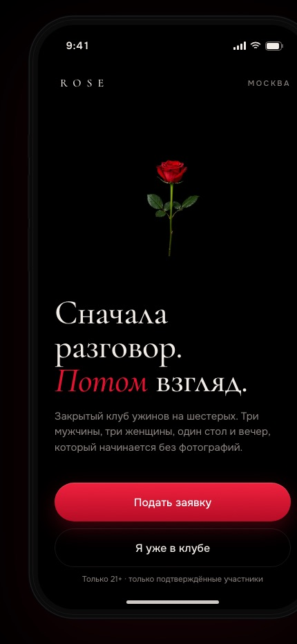
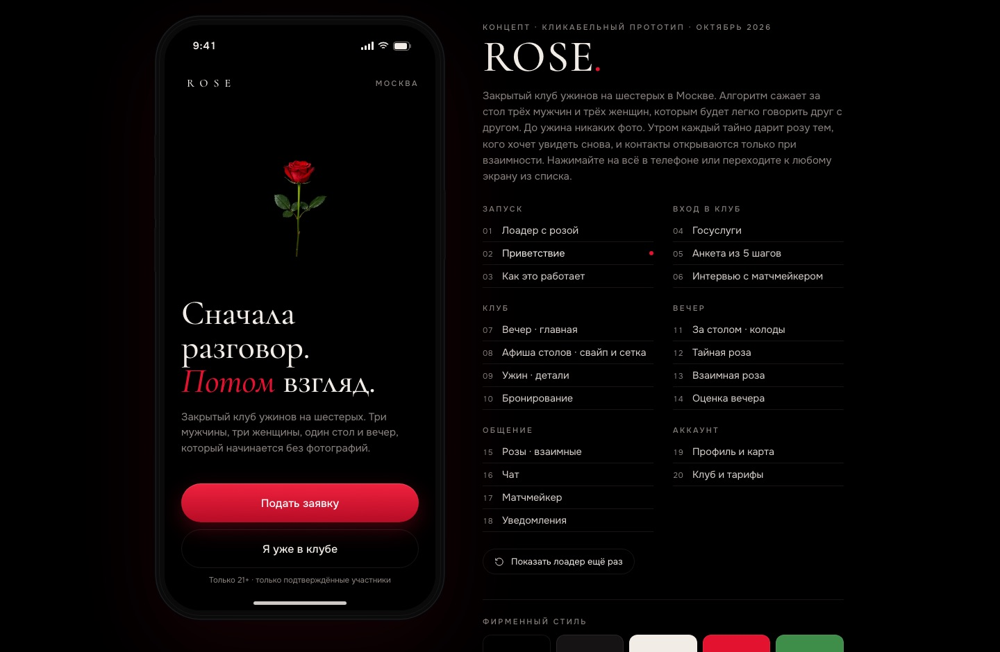

Сквозной прогон агента на реальном примере: закрытый клуб ужинов на шестерых в Москве (rosedate.ru). Ниже — сама задача, как агент работал, что нашёл, как атаковал собственные варианты red team, и финальный отчёт с Excel-моделью. Каждое число — с источником.
«Создать стратегию развития сервиса ROSE — закрытый клуб ужинов на шестерых: три мужчины и три женщины, алгоритм сажает тех, кому легко говорить. До ужина никаких фото. Утром каждый тайно дарит розу тем, кого хочет увидеть снова, — контакты открываются только при взаимности. И стратегию выхода на рынок премиум-знакомств.»
Продукт: rosedate.ru · механика: подбор по речи, Госуслуги-верификация, билеты 15–18 тыс. ₽
Рекомендация: вариант B — «глубина Москвы»: 8–12 ужинов/мес, тиры вечеров 15/25/60 тыс. ₽, партнёрства с ресторанами; подписка Rose Circle — только фазой 2 после подтверждения повторных ужинов.
Экономика стола: 6 × 16 500 = 99 000 ₽ выручки, вклад 54 450 ₽ [допущения помечены]; LTV участника ≈ 41 250 ₽, LTV/CAC ≈ 3,4, окупаемость CAC ≈ 1,3 мес.
Почему не остальные: D (приложение) — против ограничения «маржа + бренд»; C (города) — до подтверждения Москвы; E (закрыть) — рынок растёт на 25% г/г; A — кассовый потолок.
План проверки: 90 дней, пороги продолжить/изменить/остановить (повторные ≥ 45% / 25–45% / < 25% при CAC > 25 тыс. ₽).


Агент вёл сам, останавливаясь только там, где решает человек: подтверждение брифа (шаг 0), выбор варианта (шаг 6), утверждение решения (шаг 10). Прогресс — одной строкой, состояние — в файлах проекта.
Каждое число реестра — с типом, силой A–D и источником. Цепочка S### → C### → D### прослеживается от ссылки до решения. Пример: статья Forbes → утверждение «рынок 6,2 млрд ₽, +25%» → решение D001.
Red team — отдельный субагент, который атакует каждый вариант. Его возражения не «прибиты», а встроены порогами плана проверки.
| Вариант | Суть | Экономика | Вердикт red team |
|---|---|---|---|
| A · оставить как есть | 2–4 ужина/мес, органика | 198–396 тыс. ₽/мес | «кассовый потолок — дорогое хобби»; no-show ломает стол 3+3 |
| B · глубина Москвы ← выбран | 8–12 ужинов/мес, тиры 15/25/60 тыс. ₽, партнёрства, Rose Circle в фазе 2 | 0,8–1,2 млн ₽/мес, брейк-евен ≈ 8 столов | подбор «по речи» = 1–2 FTE; тир 15 тыс. рискует «вторым сортом»; ёмкость может быть в квартал, не месяц — проверяется порогами |
| C · гео (СПб, Дубай) | репликация формата | ×2–3 позже, сотни тыс. ₽ вложений | «это три разных продукта»; скандал в Дубае бьёт по Москве |
| D · гибрид-приложение | онлайн-розы, подписка 2 990 ₽/мес | MVP 8–15 млн ₽, минус на старте | против ограничения «маржа + бренд»; каннибализация имиджа |
| E · закрыть / B2B | корпоративные ужины или стоп | экономия 100–300 тыс. ₽/мес | преждевременно: рынок +25%, проблема может быть исполнительской |
Юнит-модель строится из calcs.json, где каждое допущение помечено. Ниже — водопад экономики стола и ключевые коэффициенты; в Excel-книгах те же числа считаются живыми формулами (180 формул суммарно) — поменяйте «Ввод», пересчитается всё.
pfs export --six-pager из документов 02–06; числа прослеживаются до утверждений C###.Файлы: SIX_PAGER.md · SIX_PAGER.pdf · SIX_PAGER.docx
pfs export --six-pager; полный текст — в репозитории: projects/демо/outputs/.Исходные материалы (PDF): презентация проекта · руководство пользователя · руководство администратора · фирменный стиль и реклама
Стратегия: SIX_PAGER.pdf · DOCX · REPORT.md
Эффективность — сколько времени и действий ушло на результат. Результативность — качество выхода, измеренное валидаторами: автопроверка, пересчёт формул, сверка чисел текста и Excel.